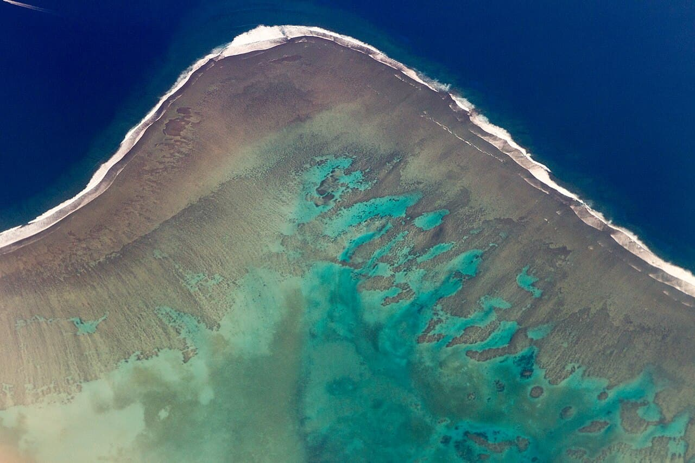

Restaurants — Namotu
Fidji · surf

Une gauche courte et parfaitement tubulaire qui casse sur un récif au bord d'une passe, en face de l'île de Namotu. On y accède en bateau.
- Lieu
- Fidji
- Niveau
- Expert
- Activités
- surf
- Type d'eau
- Mer / océan
- Coordonnées
- -17.83, 177.19 (position approximative du secteur)
Dangers à connaître
- Corail très peu profond, surtout à marée basse.
- Courant fort dans la passe voisine.
- Récif isolé : blessures à soigner immédiatement.
Le conseil d'Ocean Buddy
Ne surfe qu'à marée haute tant que tu ne connais pas le récif.
Ouvrir dans Ocean Buddy Télécharger sur l'App Store
Source : Description historique Ocean Buddy · vérification externe en attente.